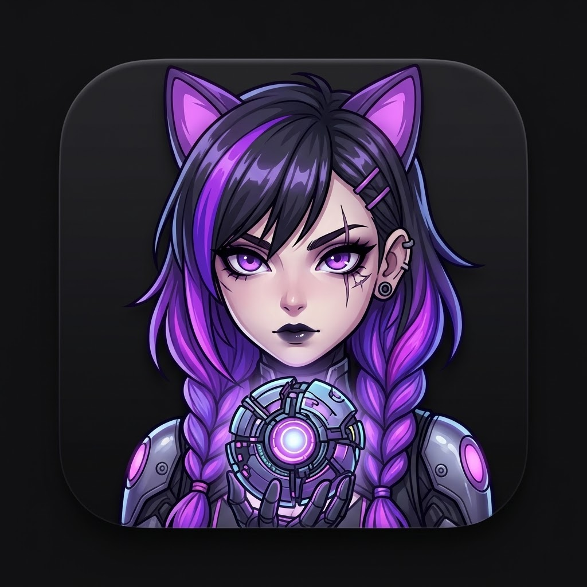

SUKIBOT
READY
PERSONAL COMPANION // v2.6
Your neon companion is ready

Suki / ASR
Systems online
A friendly little console for your day
PERSONAL COMPANION // v2.6
Your neon companion is ready

Suki / ASR
A friendly little console for your day